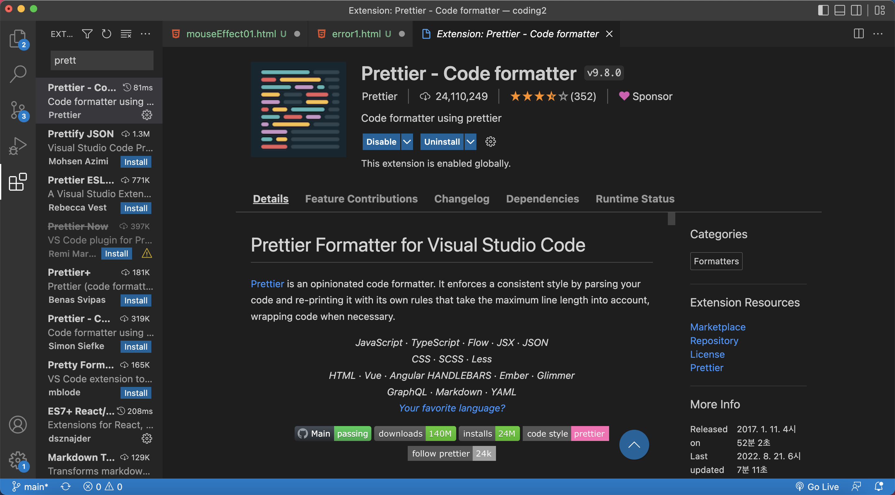

<main id="main">
    <div class="document">
        <h2 class="t_tit">error | VScode | prettier 설정 방법</h2>
        <p class="t_box">
            VScode에서 prettier 설치 후 적용이 되지 않을 경우, 설정하는 방법에 대해 알아봅시다.
        </p>
        <p class="t_box">
            * prettier
            자바스크립트 라이브러리로 작성된 코드를 저장할 시 줄간격 등을 맞춰 표준 스타일에 맞도록 변경시켜 주는 코드 포멧터(Code Formatter)입니다.
            또한 구문을 분석해 완전히 재작성해준다는 점에서 다른 포멧터와 차이점이 있습니다.
        </p>

        <hr>

        <p class="t_box2" style="display: inline-block;">1</p>
        
        
        <p class="t_box">
            "str".concat(string2, string3[, ..., stringN]);
        </p>
        <p class="t_box2" style="display: inline-block;">
            string2, ..., stringN(결합할 문자열)
        </p>
        <p class="t_box">
            결합할 문자열 중에는 배열도 올 수 있습니다.
        </p>

        <h3 class="t_tit2"># 예제를 통해 익혀봅시다.</h3>

        <div class="t_code">
            <pre><code class="language-js">const str1 = "javascript";

const currentStr1 = str1.concat("reference");
const currentStr2 = str1.concat(" ", "reference");
const currentStr3 = str1.concat(",", "reference");
const currentStr4 = str1.concat(", ", "reference", ", ", "book");
const currentStr5 = str1.concat(",", ["reference","book"]);
</code></pre>
        </div>
        <div class="result">
            <details>
                <summary>결과보기</summary>
                <div class="sample12_result">
                    javascriptreference<br>
                    javascript reference<br>
                    javascript,reference<br>
                    javascript, reference, book<br>
                    javascript,reference,book
                </div>
            </details>
        </div>


    </div>
</main>